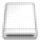

The Card Slot of the machine can also be used as the memory card drive of the computer.
 Note
Note-
For details on using the Card Slot over a network, see Using the Card Slot over a Network.
-
You cannot write data to a memory card in the Card Slot over a network.
 Important
Important-
When Read/write attribute in Device user settings under Device settings is set to Writable from USB PC or Writable from LAN PC using the Operation Panel of the machine, you cannot print photos on a memory card using the Operation Panel of the machine. After using the Card Slot as the memory card drive of the computer, remove the memory card, then be sure to set Read/write attribute to Not writable from PC. When you turned off the machine, Writable from USB PC or Writable from LAN PC will be canceled and the setting is returned to Not writable from PC when you turn on the machine next time.
-
Make sure that the memory card is not set.
If the memory card is set, remove it from the Card Slot. For details, refer to Printing Photos.
-
Press the Setup button.
-
Select
 Device settings, then press the OK button.
Device settings, then press the OK button. -
Use the

 button to select Device user settings, then press the OK button.
button to select Device user settings, then press the OK button. -
Use the
button to select Read/write attribute, then press the OK button. -
Specify the read/write attribute.
- Not writable from PC
-
The Card Slot is used only for reading. Be sure to select this mode when printing photos from a memory card.
- Writable from USB PC
-
The Card Slot is used as the memory card drive of a computer connected to the machine via USB. Data can be written on the memory card from the computer.
- Writable from LAN PC
-
The Card Slot is used as the memory card drive of a computer connected to the machine via a network. Data can be written on the memory card from the computer.
-
Press the OK button.
Important-
If you use the Card Slot as the memory card drive of the computer, you need to perform a "safe removal" operation on your computer before physically removing the memory card from your machine.
-
Drag the  Mount drive icon into the Trash.
-